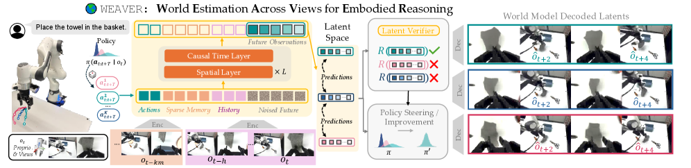
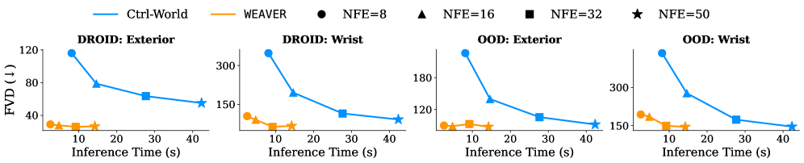

WEAVER: a world model that is faithful, consistent, and fast at once
A learned simulator is useful for robotics — to evaluate a policy, improve it, or plan at test time — only if it is faithful, coherent over long horizons, and fast, all at the same time. Prior robot world models give up at least one. WEAVER is a multi-view latent world model that, on its own real-robot setup, reaches all three together.
Three desiderata, and why prior models miss at least one
A world model can drive three downstream uses with little real interaction: policy evaluation, policy improvement, and test-time planning. To deliver them, the paper argues a world model must jointly satisfy three properties — fidelity (simulated trajectories correlate with reality), consistency (they stay coherent over long horizons), and efficiency (they are produced quickly).
The claim is that no prior robot world model has all three. Video-generation world models are high-fidelity but slow. JEPA-style latent models may not decode into the images needed to score an arbitrary visuomotor policy. The state-of-the-art manipulation world model Ctrl-World runs far slower than real time, which rules out test-time planning and makes policy improvement expensive. Manipulation makes the tension worse: multiple camera views, occlusions, and a need for physically faithful state rather than good-looking frames.
How WEAVER reaches all three
WEAVER (World Estimation Across Views for Embodied Reasoning, 928M parameters) is a multi-view latent world model, and each desideratum maps to a specific design choice.
Fidelity — every camera view (external and wrist) is encoded into patch tokens by a pretrained Stable Diffusion 3 VAE encoder; proprioceptive state is projected to a token and concatenated. WEAVER predicts both views and, unlike Ctrl-World, explicitly predicts future proprioceptive state, which the paper argues matters for contact-rich and deformable manipulation.
Dynamics and objective — given a sparse long-term memory (every k-th past latent) plus a short recent history and an h-step action plan, a 2D transformer autoregressively generates the next h latents, trained with a flow-matching loss (predict the velocity of the latent flow toward the ground-truth next latents).
Consistency — Diffusion Forcing (independent noise levels per future step) keeps long rollouts coherent rather than collapsing.
Efficiency — SPRINT blocks drop patch tokens aggressively, KV-caching reuses memory/history tokens across denoising steps, and a rectified-flow distillation step (WEAVER-REFLOW) cuts generation to a few forward passes; imagination runs at about 5 Hz.
Scoring without decoding — a reward head distilled from an off-the-shelf reward model scores rewards directly on latents plus the language instruction, and a critic estimates returns beyond the imagined horizon. So scoring a candidate future does not require decoding frames and calling a separate VLM judge.

One model, three downstream uses
The same world model is read three ways. Policy evaluation: replay a recorded real action trajectory open-loop inside WEAVER and record the predicted reward. Policy improvement: sample action chunks, forward-simulate them, compute a Monte-Carlo advantage from the reward and critic heads, keep the best rollout above a threshold, and distill it into the base policy. Test-time planning: a single-chunk best-of-N — sample candidate action chunks, imagine their outcomes, and execute the highest-advantage one, all scored in latent space without an external judge.
Evidence
| Downstream use | Result (real hardware) |
|---|---|
| Policy evaluation | ρ = 0.870 correlation between WEAVER's score and real-world success rate |
| Policy improvement | +38% real-world success on top of the π0.5 robot foundation model |
| Test-time planning | +14% real-world success, with a 5–10× speedup over prior world models |
| Out-of-distribution | better than prior world models on OOD scenarios |
The main world-model baseline is Ctrl-World (a 1.5B diffusion model trained on DROID), which WEAVER reports Pareto-dominating on fidelity versus speed; the policy-improvement base is the π0.5 foundation model. WEAVER itself is pretrained on DROID (~1M steps on 4×H100 for about 10 days) and runs imagination at roughly 5 Hz.

Limitations
WEAVER leans on pretrained components — an SD3 VAE encoder/decoder and a distilled reward model — so their coverage bounds it. The "all three at once" claim is relative to prior world models on the paper's own manipulation suite and real-robot tasks, not a universal result. The version read here does not list author affiliations. As with any single real-robot system, the numbers come from its own task suite, and the boundary worth keeping is that a more faithful, faster simulator is a better substrate for evaluation and planning, not a replacement for the verification and trust-horizon questions that sit on top of it.
References
- WEAVER: WEAVER, Better, Faster, Longer: An Effective World Model for Robotic Manipulation (arXiv:2606.13672). Code, models, and videos on the project page linked from the paper.
- Main world-model baseline: Ctrl-World. Policy-improvement base model: π0.5.